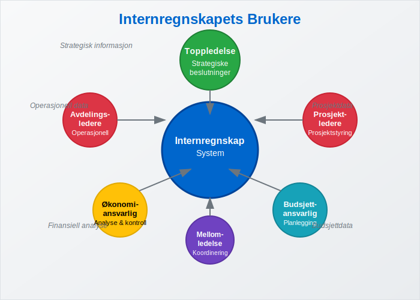
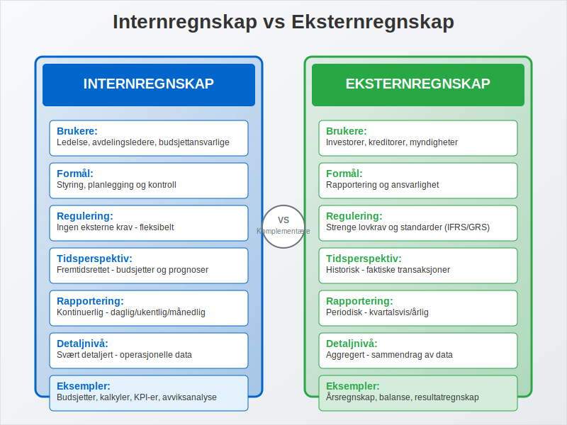
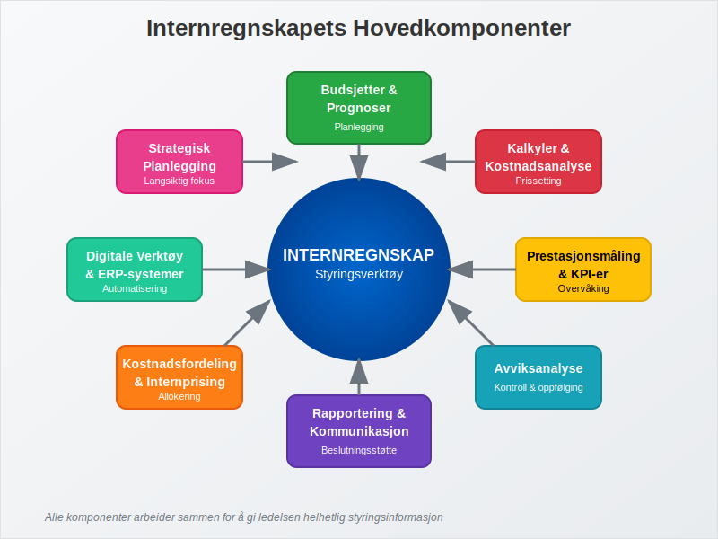
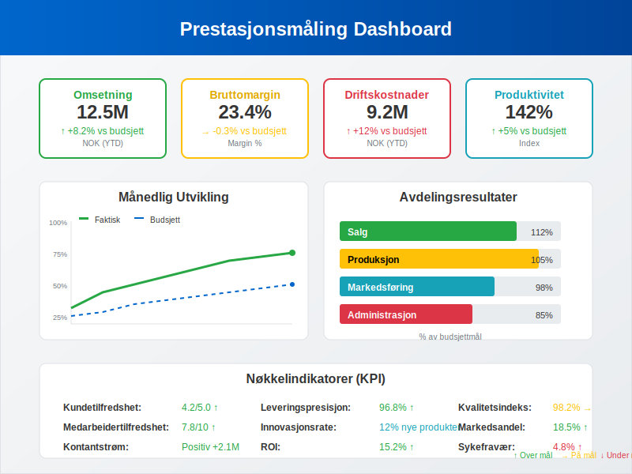
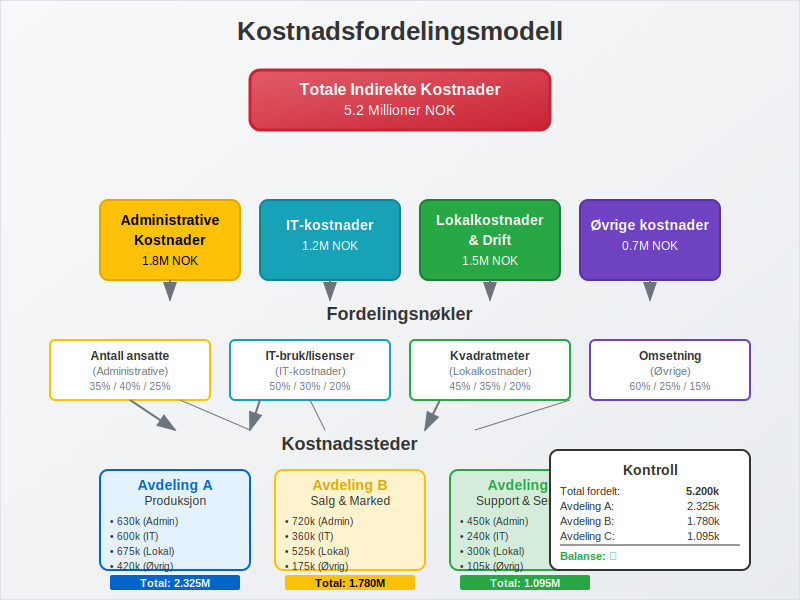
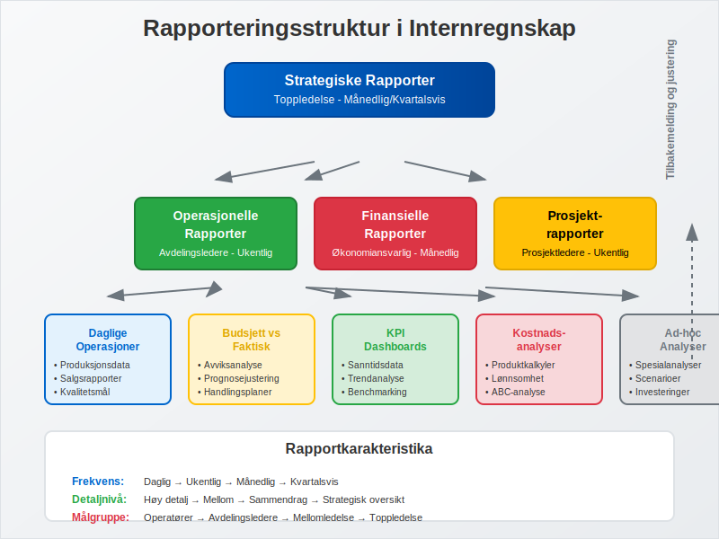
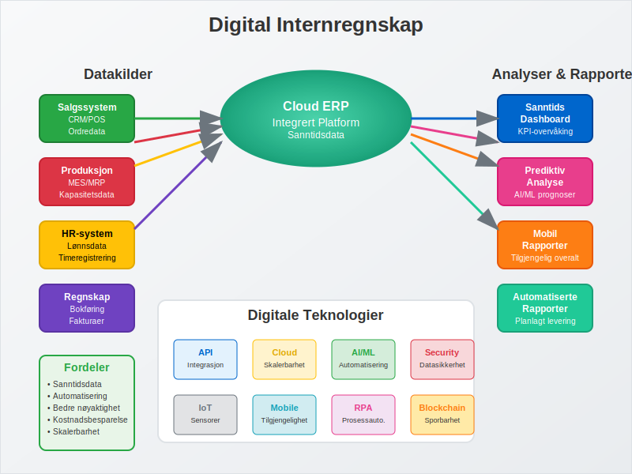
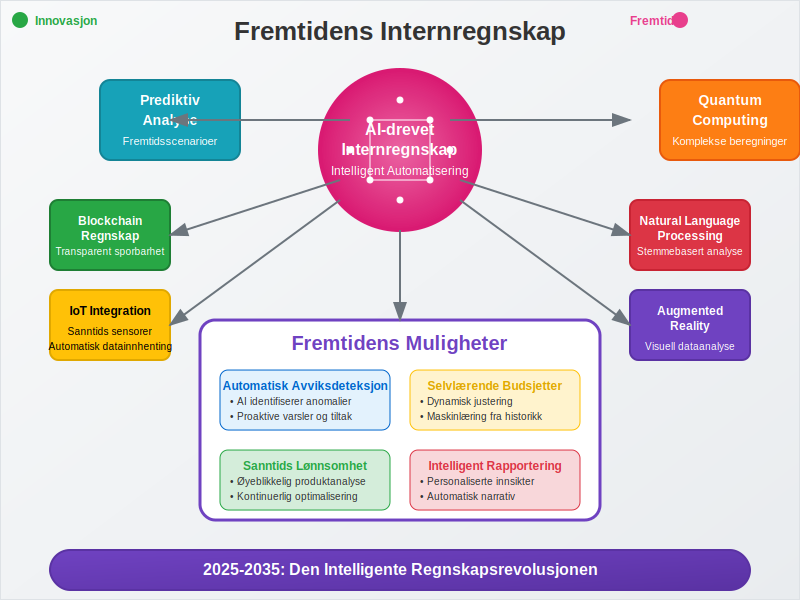

Internregnskap er finansiell rapportering som er utarbeidet primært for interne interessenter som ledelse, avdelingsledere og andre beslutningstagere i virksomheten. Dette står i motsetning til eksternregnskap, som er rettet mot eksterne interessenter. Internregnskapet er fleksibelt og tilpasset virksomhetens spesifikke behov for styring, planlegging og kontroll av den daglige driften.
Seksjon 1: Grunnleggende om Internregnskap
Internregnskap er et styringsverktøy som gir ledelsen detaljert og relevant informasjon for å ta informerte beslutninger om virksomhetens drift og strategi. Det fokuserer på fremtidsrettet informasjon og operasjonelle detaljer.

1.1 Definisjon og Formål
Internregnskap kan defineres som:
Et fleksibelt og detaljert system for innsamling, analyse og rapportering av finansiell og operasjonell informasjon til interne beslutningstagere for å støtte planlegging, styring og kontroll av virksomheten.
Hovedformålene med internregnskap inkluderer:
- Planlegging: Utarbeide budsjetter og prognoser for fremtidig drift
- Styring: Overvåke og styre den daglige driften
- Kontroll: Sammenligne faktiske resultater med planer og budsjetter
- Beslutningsstøtte: Gi grunnlag for strategiske og operasjonelle beslutninger
- Prestasjonsmåling: Evaluere avdelinger, produkter og ansattes prestasjoner
1.2 Hovedkarakteristika ved Internregnskap
| Karakteristikk | Beskrivelse | Betydning |
|---|---|---|
| Fleksibelt | Tilpasset virksomhetens behov | Relevant og nyttig informasjon |
| Fremtidsrettet | Fokus på budsjetter og prognoser | Støtter planlegging |
| Detaljert | Omfattende operasjonelle data | Muliggjør presis styring |
| Hyppig | Daglig, ukentlig eller månedlig | Rask respons på endringer |
| Konfidensielt | Kun for intern bruk | Beskytter konkurransefortrinn |
Seksjon 2: Forskjeller mellom Internregnskap og Eksternregnskap
Internregnskap og eksternregnskap har fundamentalt forskjellige formål og karakteristika.

2.1 Sammenligning av Hovedforskjeller
| Aspekt | Internregnskap | Eksternregnskap |
|---|---|---|
| Brukere | Ledelse og interne beslutningstagere | Eksterne interessenter |
| Formål | Styring og planlegging | Rapportering og ansvarlighet |
| Regulering | Ingen eksterne krav | Strenge lovkrav og standarder |
| Tidsperspektiv | Fremtidsrettet | Historisk |
| Rapporteringsfrekvens | Kontinuerlig/hyppig | Periodisk (kvartal/år) |
| Detaljnivå | Svært detaljert | Aggregert |
| Fleksibilitet | Høy | Lav (standardisert) |
2.2 Komplementære Roller
Selv om internregnskap og eksternregnskap har forskjellige formål, utfyller de hverandre:
- Internregnskap gir grunnlaget for den daglige styringen
- Eksternregnskap kommuniserer resultatene til omverdenen
- Begge bidrar til virksomhetens totale finansielle styring
Seksjon 3: Hovedkomponenter i Internregnskap
Internregnskap består av flere integrerte komponenter som sammen gir ledelsen et helhetlig bilde av virksomhetens drift og ytelse.

3.1 Budsjetter og Prognoser
Budsjetter er fundamentet i internregnskapet og fungerer som styringsverktøy for planlegging og kontroll.
Typer Budsjetter:
- Driftsbudsjett: Planlagte inntekter og kostnader
- Investeringsbudsjett: Planlagte investeringer i anleggsmidler
- Likviditetsbudsjett: Planlagt kontantstrøm
- Avdelingsbudsjetter: Budsjetter for enkelte avdelinger eller kostnadssteder
- Underenhetsbudsjetter: Budsjettordninger for spesifikke underenheter i organisasjonen. Les mer om Underenhet.
Budsjettets Rolle:
- Planlegging: Setter mål og retning for virksomheten
- Koordinering: Sikrer at alle avdelinger arbeider mot samme mål
- Kontroll: Gir grunnlag for sammenligning med faktiske resultater
- Motivasjon: Skaper engasjement og ansvarsfølelse
3.2 Kalkyler og Kostnadsanalyse
Kalkyler er detaljerte beregninger av kostnader knyttet til produkter, tjenester eller prosjekter.
Hovedtyper Kalkyler:
| Kalkyletype | Formål | Anvendelse |
|---|---|---|
| Forhåndskalkyle | Planlegge kostnader | Prissetting og budsjetter |
| Etterkalkyle | Analysere faktiske kostnader | Kontroll og læring |
| Selvkostkalkyle | Beregne totale kostnader | Prissetting og lønnsomhet |
| Bidragskalkyle | Analysere dekningsbidrag | Produktmiks og beslutninger |
Kostnadsklassifisering:
- Variable kostnader: Endres med aktivitetsnivået
- Faste kostnader: Uavhengige av aktivitetsnivået
- Direkte kostnader: Kan knyttes direkte til produkter/tjenester
- Indirekte kostnader: Må fordeles på produkter/tjenester
3.3 Avviksanalyse
Avviksanalyse sammenligner faktiske resultater med budsjetterte tall for å identifisere områder som krever oppmerksomhet.
Typer Avvik:
- Prisavvik: Forskjell i pris per enhet
- Mengdeavvik: Forskjell i solgte/produserte enheter
- Effektivitetsavvik: Forskjell i ressursbruk
- Kapasitetsavvik: Forskjell i kapasitetsutnyttelse
Avviksanalysens Verdi:
- Identifiserer problemer tidlig
- Muliggjør korrigerende tiltak
- Forbedrer fremtidige budsjetter
- Øker ansvarlighet i organisasjonen
Seksjon 4: Prestasjonsmåling og Nøkkeltall
Internregnskap bruker ulike prestasjonsindikatorer (KPI-er) for å måle og overvåke virksomhetens ytelse på forskjellige områder.

4.1 Finansielle Nøkkeltall
| Nøkkeltall | Beregning | Formål |
|---|---|---|
| Bruttomargin | (Bruttofortjeneste / Omsetning) × 100 | Måle lønnsomhet |
| EBITDA-margin | (EBITDA / Omsetning) × 100 | Operasjonell lønnsomhet |
| Arbeidskapitalens omløpshastighet | Omsetning / Arbeidskapital | Effektivitet |
| Avkastning på investert kapital | Resultat / Investert kapital | Kapitaleffektivitet |
4.2 Operasjonelle Nøkkeltall
- Produktivitetsmål: Produksjon per ansatt, salg per kvadratmeter
- Kvalitetsmål: Reklamasjoner, feilprosent, kundetilfredshet
- Leveransemål: Leveringspresisjon, leveringstid
- Innovasjonsmål: Andel nye produkter, FoU-investeringer
4.3 Balansert Målstyring (Balanced Scorecard)
Balansert målstyring integrerer finansielle og ikke-finansielle mål i fire perspektiver:
- Finansielt perspektiv: Lønnsomhet og vekst
- Kundeperspektiv: Kundetilfredshet og markedsandel
- Prosess-perspektiv: Operasjonell effektivitet
- Læring og vekst: Kompetanseutvikling og innovasjon
Seksjon 5: Kostnadsfordeling og Internprising
Kostnadsfordeling og internprising er viktige verktøy for å allokere kostnader og måle lønnsomhet på tvers av avdelinger og produkter.

5.1 Kostnadsfordelingsprinsipper
Fordelingsnøkler:
- Direkte arbeidstimer: For produksjonskostnader
- Kvadratmeter: For lokalkostnader
- Omsetning: For salgskostnader
- Antall ansatte: For personalkostnader
Aktivitetsbasert kostnadsfordeling (ABC):
- Identifiserer kostnadsdrivere for hver aktivitet
- Gir mer nøyaktig kostnadsfordeling
- Bedre grunnlag for prissetting og lønnsomhetsanalyse
5.2 Internprising
Internprising brukes når avdelinger eller datterselskaper handler med hverandre:
Internprisingsmetoder:
- Markedspris: Basert på eksterne markedspriser
- Kostpris pluss: Kostpris + fortjenestemargin
- Forhandlet pris: Avtalt mellom avdelingene
- Standardpris: Forhåndsbestemt pris
Formål med Internprising:
- Måle avdelingenes lønnsomhet
- Motivere til effektiv drift
- Sikre rettferdig ressursallokering
- Overholde skattemessige krav
Seksjon 6: Rapportering og Kommunikasjon
Effektiv rapportering er avgjørende for at internregnskapet skal ha verdi for beslutningstagerne.

6.1 Rapporteringstyper
Standardrapporter:
- Månedlige resultatrapporter: Sammenligning med budsjett
- Avviksrapporter: Fokus på betydelige avvik
- Prognoserapporter: Oppdaterte anslag for året
- Prosjektrapporter: Status for spesifikke prosjekter
Ad-hoc Analyser:
- Lønnsomhetsanalyser: For produkter eller kunder
- Investeringsanalyser: Vurdering av nye investeringer
- Scenarioanalyser: “Hva hvis”-beregninger
- Benchmarking: Sammenligning med konkurrenter
6.2 Rapporteringsprinsipper
Effektive Rapporter Kjennetegnes av:
- Relevans: Inneholder informasjon som påvirker beslutninger
- Aktualitet: Leveres når informasjonen trengs
- Nøyaktighet: Korrekte og pålitelige data
- Klarhet: Lett å forstå og tolke
- Handlingsrettet: Gir grunnlag for konkrete tiltak
Seksjon 7: Digitalisering av Internregnskap
Moderne teknologi har revolusjonert internregnskapet og gjort det mer effektivt og tilgjengelig.

7.1 Teknologiske Løsninger
ERP-systemer:
ERP-systemer integrerer alle forretningsprosesser og gir:
- Sanntidsdata fra alle avdelinger
- Automatisert rapportering
- Integrert budsjett- og prognosefunksjonalitet
- Avanserte analyseverktøy
Business Intelligence (BI):
- Dashboards med sanntids nøkkeltall
- Selvbetjente analyser for ledere
- Prediktive analyser for prognoser
- Visualisering av komplekse data
7.2 Fordeler med Digitalisering
| Fordel | Beskrivelse | Gevinst |
|---|---|---|
| Automatisering | Reduserer manuelt arbeid | Økt effektivitet |
| Sanntidsdata | Oppdatert informasjon | Raskere beslutninger |
| Integrering | Sammenkoblede systemer | Bedre datakvalitet |
| Skalerbarhet | Håndterer vekst | Fremtidssikret løsning |
Seksjon 8: Utfordringer og Beste Praksis
Implementering og drift av internregnskap kan møte ulike utfordringer som krever gjennomtenkte løsninger.
8.1 Vanlige Utfordringer
Organisatoriske Utfordringer:
- Motstand mot endring fra ansatte
- Mangel på kompetanse innen internregnskap
- Utilstrekkelig lederstøtte
- Dårlig datakvalitet
Tekniske Utfordringer:
- Fragmenterte systemer som ikke kommuniserer
- Komplekse kostnadsfordelingsmodeller
- Tidkrevende rapporteringsprosesser
- Mangel på standardisering
8.2 Beste Praksis
Suksessfaktorer:
- Tydelig strategi: Definer mål og forventninger
- Ledelsesengasjement: Sikre støtte fra toppledelsen
- Kompetanseutvikling: Invester i opplæring
- Gradvis implementering: Start enkelt og bygg ut
- Kontinuerlig forbedring: Evaluer og juster regelmessig
Implementeringsanbefalinger:
- Start med grunnleggende budsjetter og bygg ut
- Fokuser på de viktigste nøkkeltallene først
- Involver brukerne i utformingen av rapporter
- Etabler klare roller og ansvar
- Dokumenter prosesser og rutiner
Seksjon 9: Fremtiden for Internregnskap
Internregnskap utvikler seg kontinuerlig med nye teknologier og forretningsmodeller.

9.1 Teknologiske Trender
Kunstig Intelligens (AI):
- Automatisk avviksdeteksjon
- Prediktive analyser for bedre prognoser
- Intelligent rapportering som tilpasser seg brukeren
- Automatisert kostnadsfordeling
Sanntidsregnskap:
- Kontinuerlig oppdatering av finansielle data
- Øyeblikkelig avviksrapportering
- Dynamiske budsjetter som justeres automatisk
- Sanntids dashboards for ledelsen
9.2 Utviklingstrender
Økt Fokus på:
- Bærekraftsregnskap: Miljømessige og sosiale indikatorer
- Risikoanalyse: Integrert risikostyring
- Scenarioplanlegging: Forberedelse på usikkerhet
- Agile budsjetter: Fleksible og responsive planleggingsprosesser
Konklusjon
Internregnskap er et uunnværlig verktøy for moderne virksomhetsstyring. Det gir ledelsen den detaljerte og relevante informasjonen som trengs for å ta informerte beslutninger om drift og strategi. Mens eksternregnskap fokuserer på historisk rapportering til eksterne interessenter, er internregnskap fremtidsrettet og tilpasset virksomhetens spesifikke styringsbehov.
Suksessfullt internregnskap krever:
- Klar strategi og definerte mål
- Riktig teknologi og systemer
- Kompetente medarbeidere
- Ledelsesengasjement
- Kontinuerlig utvikling
Med digitalisering og nye teknologier som AI og sanntidsanalyser, vil internregnskap fortsette å utvikle seg og bli enda mer verdifullt for virksomhetsstyring. Virksomheter som investerer i moderne internregnskapssystemer vil ha betydelige konkurransefortrinn gjennom bedre beslutningsgrunnlag og mer effektiv drift.
For å lære mer om relaterte emner, se våre artikler om budsjetter, kostnadsanalyse, og finansiell planlegging.